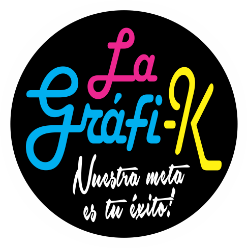

Lista de Tareas
+
Haz doble clic en cualquier tarea para cambiar su prioridad
Tareas Favoritas
Haz clic en cualquier tarea para agregarla automáticamente a la lista principal.
Ordenadas alfabéticamente
Seleccionar prioridad
Alta
Media
Ninguna
El borde de la tarea cambiará de color según la prioridad